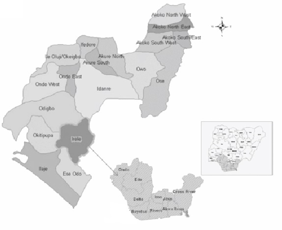
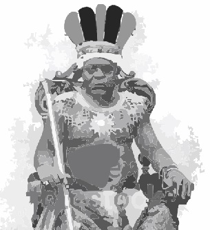
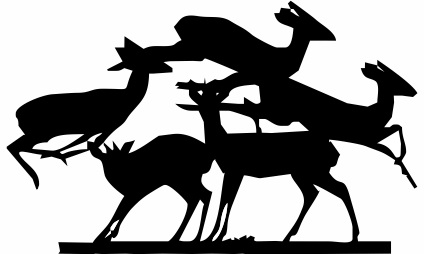

In 1962 in a village called Iro. Iro happened to be a very small town under Idanre Local Govt-Ondo State. There was a great hunter known in that village so-called Odesanmi. He had one wife and only one child. The wife of Odesanmi was Aderonke, while his child was named Morohunmubo. Odesanmi strongly believed in hunting because he knows that he'd inherited it from his fore-fathers.
Moreso, he knew that hunting had being in existence like that in his father generations for thousands of years. He was always very careful with his hunting. He had never for once joked with hunting neither affronted with deceits. However, anytime he went to the forest, he'd killed all kinds of animals.

Meanwhile, Odesanmi preferably wanted his wife to be the one preparing the bush meat that he often brings from the forest. Nonetheless, there was a king in that village. Apparently, the king usually has festival after seven basic years.

Within the year, there are always three masquerades that used to entertain the audience that came to watch their performance. Fortunately, it was only the king that knows the names of those masquerades. Basically, the king has two wives ,the first wife had two children .The first wife's children were Temiogbe Aderanti, and the second wife's son was Moromofeyinlefun. The king enormously loved his family with his last strength.
However, in that every seven years, there was always a game that they used to play, mainly whereby the king would order all the hunters to go and hunt at their pleasant time: though, wherewith, it was part of their tradition. Odesanmi decided to go on a hike-hunt that day at night; maybe he could see any meat that his family would eat, even till the next day.
He put on his allures clothes and put some weapons on his left hand. Meanwhile, he's a left hand user. As he was going, suddenly, he heard some sound of animals “whipping!!” Immediately, he hid himself on top of a banana tree and used the leaf beside him and covered his face, waiting for those animals to come out, fortunately after some hours, the animals matched out.
As soon as he looked behind, he discovered that his best meat “antelope!” was among the animals. Ultimately, he killed it.

The next day when he got back home, he handed over the bush meat to his wife for her to smoke it.